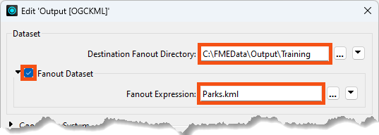
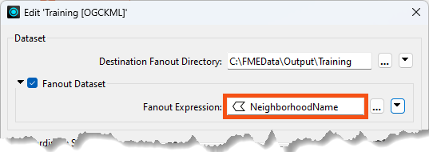
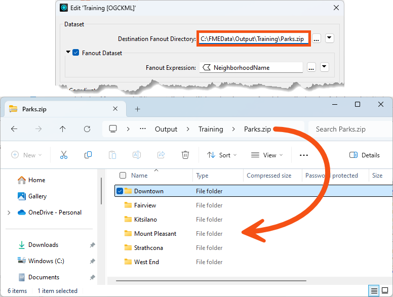
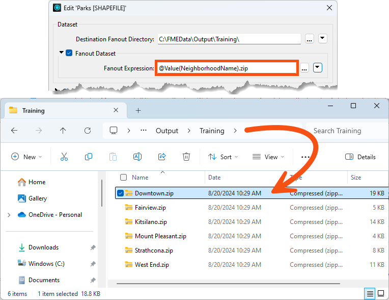

After completing this lesson, you’ll be able to:
A dataset fanout delivers data to the same feature type but in multiple datasets. Using the elevation example again, here the output is a different dataset for each elevation value:
This fanout results in a series of DXF datasets, each with one elevation’s worth of contours on one layer.
A dataset fanout is defined in the Navigator window in Workbench, just below the writer’s dataset parameter:

Double-clicking the Fanout Dataset parameter opens a dialog in which a Fanout checkbox is set. Here, you can define the folder to write to and the Fanout Expression. The default values set the Fanout Directory from the destination dataset path and the Fanout Expression from the destination dataset file name:

To achieve a fanout (a different file per attribute value), select an attribute to include in the file name, such as this:

Each neighborhood produces a separate file of park features in this case.
It's important to note that the Text Editor dialog can add different components to the Fanout Directory and the Fanout Expression, including user parameters, functions, and datetimes. Generally, even if the requirement is to use an attribute to define a sub-folder, it would go into the Fanout Expression rather than the Fanout Directory.
Applying a fanout to a writer and zipping (compressing/archiving) the written files is easily possible. There are several methods to do so.
Fanout to a Single Zip File
By setting the Destination Fanout Directory as a zip file, it's possible to write multiple fanned-out datasets to a single zip file:

Here, the user is fanning out to Shapefile based on the NeighborhoodName attribute. The output directory is set to a zip file, meaning the output is a single zip file with multiple datasets. Because this is Shapefile format, each dataset is a folder containing several files (.shp, .shx, and so on).
Fanout to Multiple Zip Files
Setting the Fanout Expression with a zip file extension makes it possible to write multiple fanned-out zip files, each containing a single dataset.

Here, the user is also fanning out to Shapefile based on the NeighborhoodName attribute. The output directory is set to a plain directory, but the Fanout Expression is given a zip file extension. This leads to multiple zip files, one per dataset.
This fanout is potentially useful when the output format includes multiple files (like Shapefile format), and you wish to handle the output some way, post-translation. It's also useful for large datasets (such as raster) where a single file can be way larger than its zipped equivalent.
Fanout to Multiple Zip Files Inside a Single Zip File
By using both of the above techniques (in other words, giving both the directory and the fanout parameters a zip file extension), you can write multiple zip files containing a single dataset into a single zip file.

Here, the output is a single zip file (Training.zip) containing a series of zipped dataset files.